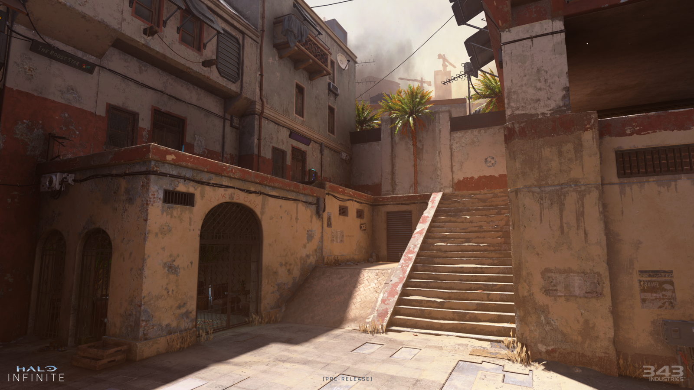
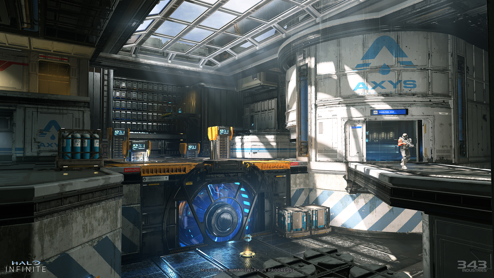

Aquarius

According to Halopedia, the map is set within a facility owned by Aquarius Terraforming Solutions, a human company that specializes in terraforming barren planets so that they can sustain life. This particular facility is being used to perform tests on water and various forms of plant life.
Bazaar
According to Halopedia, the map is set in and around the West Market of Mombasa, Earth. It takes place after the Battle of Mombasa, as the city is in the midst of an urban renewal. While the plan to rebuild the city was ambitious and expensive, investment from the UEG and UNSC activity at the Voi Excession has led to some of the metropolis being revitalized. Numerous businesses like The Roost Star and Kuku's Cafe dot the map, while streets like Haller Street and Kuku Street cut through the area. A partially-constructed space elevator can be seen to the southeast, possibly a repaired Mombasa Tether or simply its replacement.
Behemoth

According to Halopedia, Behemoth is set on the Halo ring Installation 07, in and around a desert Forerunner structure that is part of the installation's tectonic fabrication seams. These architectural features serve a variety of purposes, including remediation and transportation. The structure upon which the map rests has recently risen up through the sands for an unknown reason after lying dormant for thousands of years.
Deadlock

According to Halopedia, the map is set in an unknown location, with a Banished anti-aircraft cannon looming in the center. Another cannon and some Banshees can be seen in the distance attacking the UNSC Panama, a UNSC Mulsanne-class frigate hovering over a corner of the map.
Fragmentation

According to Halopedia, the map is set within one of the many canyons on the surface of Installation 07. Set into the side of a high cliff, this canyon hosts two beam emitters, and various Forerunner nodes and beacons.
Highpower

According to Halopedia, the map is set on an unknown planet, in and around a sizable mountainside United Nations Space Command base. At some point, the Mulsanne-class frigate UNSC Panama and a CAS-class assault carrier did battle in the skies above the base.
Launch Site

According to Halopedia, the map is set on an unknown human colony within Launchsite 2A, a facility utilized by the 22nd First Response Wing of the local UNSC Planetary Defense force. One corner of the map features a YSS-1000 Sabre that is preparing to launch from Launch Pad 03. The facility also includes a hangar with a retractable set of tracks that are used to move the Sabres into position on the launch pad.
Live Fire

According to Halopedia, the map is set in the Avery J. Johnson Academy of Military Science.
Recharge
According to Halopedia, the map is set in an abandoned Axys' hydroelectric facility, a key piece of resource infrastructure that once helped to maintain a stable supply of energy for a UEG colony world.
Streets

According to Halopedia, Streets is set in the urban streets of New Mombasa, close to the base of the Mombasa Tether in the middle of reconstruction. It is set in an area which transitions from Old Mombasa to New Mombasa. It features several buildings around the map, including a joint entrance located on Kenya Street to both Hope Station and Makupa Station on the New Mombasa Transit Authority network and a New Mombasa Police Department precinct.